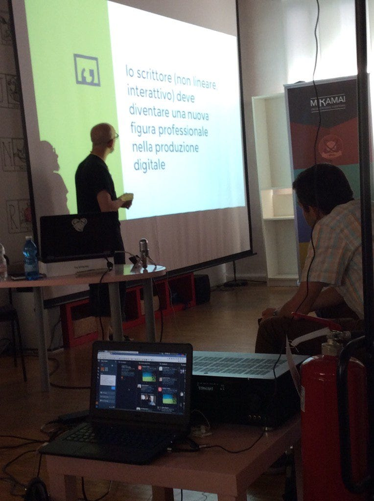
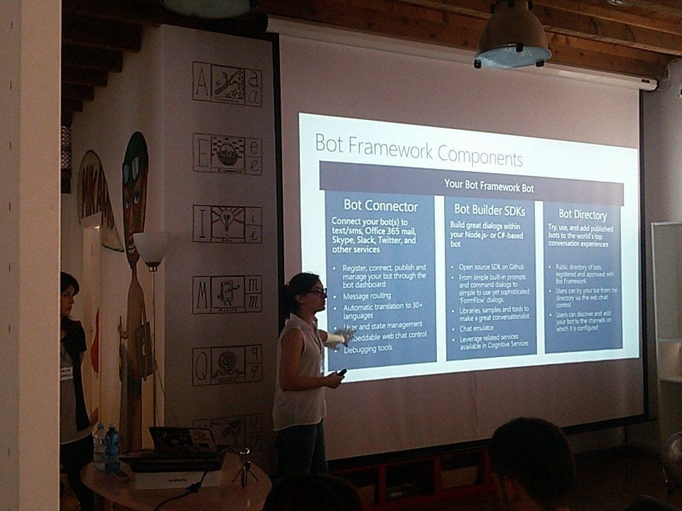

Meetup sui chatbot a Milano
Il 29 settembre inizierà a Milano una serie di meetup sul tema dei chatbot. Si tratta della continuazione ideale dell’evento #ConvComp2016 del 24 giugno, non solo per il tema, ma anche perché ci troveremo nello stesso luogo, il Venini 42. Cambia il formato, perché non si tratta di una giornata intera ma di un classico meetup serale, dalle 19 alle 21.

Il primo incontro inizia con una rapida overview dello stato dell’arte della tecnologia, dei problemi da risolvere e delle opportunità che ci offrono, e si finisce con un ampio spazio per fare networking. In mezzo c’è la possibilità di presentare un proprio talk: chi ha qualcosa da mostrare, progetti in corso o sogni nel cassetto, può mandarmi un messaggio (sono l’organizzatore). Sono sufficienti cinque minuti e non sono necessarie slide. Edit 12/09: abbiamo tre talk, vedete il programma a fine post. C’è ancora spazio per proporsi. Edit 19/09: i talk sono diventati quattro e il programma della serata è chiuso. Però è aperta la call for speakers per la serata successiva!
Però c’è qualcosa di più importante. Se state leggendo questo blog è perché i chat bot vi interessano e credete nel loro futuro. Se siete della zona di Milano verrete a questo meetup (iscrivetevi!), ma se vivete o lavorate altrove vi invito ad organizzarne uno vostro con cui attirare altre persone come voi e fare squadra per dare forza a questo interesse. Createne uno subito e scoprirete chi altro c’è nella vostra zona. E se non vi va di usare meetup troverete mille altri modi per organizzarvi. Siete pronti? Via!

Programma della serata
Inizio alle 19:00, via Venini 42 Milano.
- Keynote, di Paolo Montrasio
- RedBot, di Guido Bellomo
- Creazione di un bot Telegram passo passo, di Salvatore Cordiano, Full stack Web Developer @parallelit
- NLP e bot design, di Alessandro Vitale @alevitale https://medium.com/@alevitale https://medium.com/@Conversate
Se volete tenere un talk in una delle prossime serate mandami un messaggio.